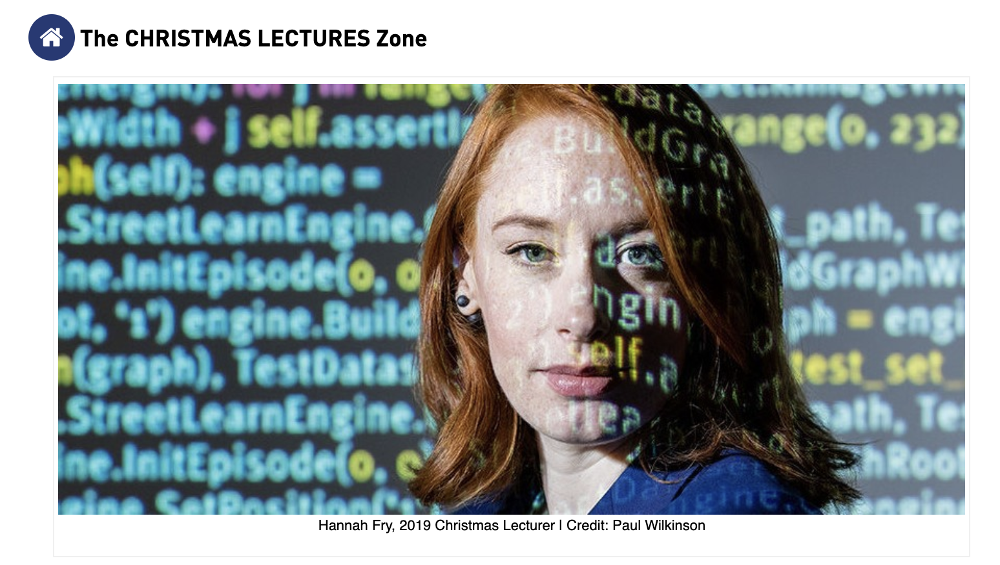
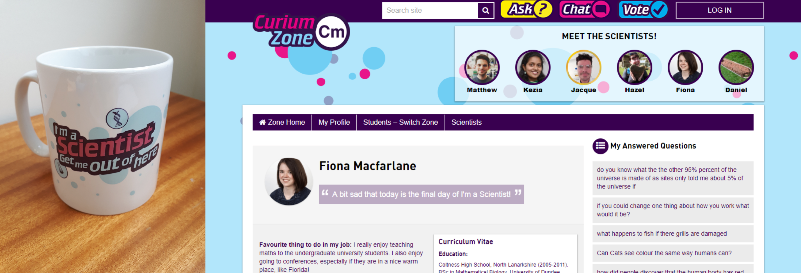
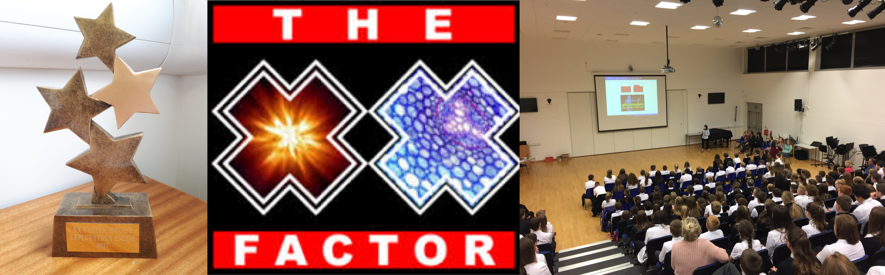

The First Chances Fife S1 – Summer School 9th June 2021
University led event for high school pupils in the local area to engage in interactive workshops with researchers from STEM areas. I ran a Teams session on `Using Maths to Track Populations and Diseases' giving an introduction to mathematical biology and it's applications in the real world including tracking COVID-19.The First Chances Fife S1 – British Science Week 9th March 2021
University led event for high school pupils in the local area to engage in interactive workshops with researchers from STEM areas. I ran a Teams session on `Using Maths to Fight Cancer' giving an introduction to mathematical biology and it's applications in the real world.I'm a Mathematician: Get me out of here
'I’m a Mathematician, Get me out of here' is an online, student-led enrichment activity where students connect with people who have maths at the heart of their work. The format is based on the successful, award-winning 'I’m a Scientist, Get me out of here' project and was run after Dr Hannah Fry presented the Royal Institution’s 2019 Christmas Lecturers – 'Secrets and lies: The hidden power of maths'. I participated in the 2020 event which ran from the 1st to the 31st of January.
You can find out more about 'I'm a Mathematician: Get me out of here' and view my profile here
I'm a Scientist: Get me out of here
'I'm a Scientist: Get me out of here' is an online competition where scientists from across the UK interact with primary and secondary school students. Students challenge the scientists over fast-paced online text-based live chats. They ask the scientists anything they want, and vote for their favourite scientist to win a prize of £500 to communicate their work with the public. I participated in the 2018 event which ran from the 5th to the 16th of March. I enjoyed answering the students questions and was even voted into the final three within the 'Curium' zone.
You can find out more about 'I'm a Scientist: Get me out of here' and view my profile here
Explorathon 2017: The XX Factor
The 'XX Factor' competition is a three part compatition run within the University of St Andrews. Female PhD students each have three minutes and three powerpoint slides to convey their research. The three parts of the competition involve:
- 1) live presentations to, and Q&A with, students at Auchmuty High School
(Glenrothesd
- 2) live presentations to the general public at the Byre Theatre (St
andrews)
- 3) online recordings of the presentation that are available to the general public,
primary schools and high schools
I participated in the 2017 event, competing against seven other PhD students from a wide range of fields of study. I was awarded 3rd place at the high school event (pictured) and awarded first place in the online event (trophy pictured).
You can watch all of the online presentations here, or you can download my presentation here.
Maths Week Scotland 2017
'Maths Week Scotland' was a government initiative, held from the 11th to the 17th of September 2017, to promote and celebrate mathematics with a wide range of activities by schools, colleges and universities across Scotland.As part of this, the University of Abertay, the University of Dundee and the University of St Andrews set up mathematics themed stalls at Dundee Science Centre on the 16th September. I helped out on these stalls with others from the three institutions. Activities we presented involved 'mathematical bubbles', 'virtual reality space walks' and other hands on activities aimed at children.
Women in Science Festival 2016: Meet the XX Researcher
The 'Meet the XX Researcher' was an internal event where primary school pupils had the oppurtunity to ask female researchers about their work, with the aim to promote interest in scientific careers and research, especially for young women. This involved speed interviews where groups of ten students had ten minutes to ask each researcher any question they wanted.I participtaed in the event, held on the 11th June 2016, at the Byre Theatre (St Andrews), answering questions on my research and mathematics in general.